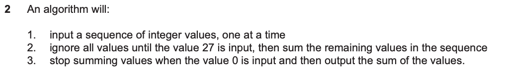
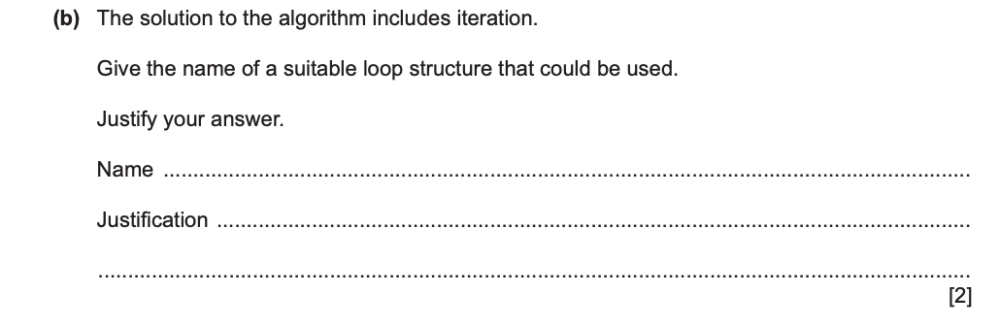
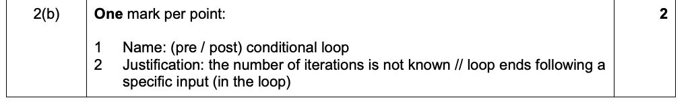

Program a booking system · Concept 19
Justify the structure from the requirement
Observe
Three requirements
| Task | Information available |
|---|---|
| Print four receipts | Exactly four actions are required |
| Process requests until 0 | Count unknown; first input may be 0 |
| Obtain one valid option | At least one attempt is required |
Look, then discuss
Which fact tells you whether FOR, WHILE or REPEAT is the clearest choice?
Compare printing four receipts, accepting requests until 0, and asking for one valid menu option. All repeat actions, but their stopping information differs.
Recall
Recall the three structures
FOR controls a predetermined counter sequence. WHILE tests a continuation condition before the body. REPEAT tests a stopping condition after the body.
Explain
Explanation · 1 / 3
Use FOR for a known count or sequence
Four receipts give four iterations. “The number of repetitions is known before the loop begins” is the reason; merely saying “FOR repeats” is not a useful justification.
Explanation · 2 / 3
Use WHILE when processing may be skipped
A sentinel stream may contain no ordinary data. Reading before a WHILE test naturally excludes a first sentinel without processing it.
Explanation · 3 / 3
Use REPEAT when an attempt must occur first
A menu option must be entered before validation. REPEAT naturally captures that order. A correctly initialised WHILE solution can also work; suitability does not imply that every other structure is impossible.
Work together
Write a reason that belongs to the question
A sensor supplies readings until -999; the number of readings is unknown.
Work together · 1 / 2
Name a suitable structure
A condition-controlled loop is suitable. For a first marker that must be excluded, use WHILE Reading <> -999 with the initial input before the loop.
Work together · 2 / 2
Connect behaviour to the requirement
The input determines when processing stops, and the first input may already be the marker. A guessed FOR count would either stop too early or ask for unwanted readings.
An exam justification should name the relevant count or stopping behaviour and connect it to the context.
Check
Try it yourself · Teacher-written
A loop displays 20, 15, 10, 5, 0. Which structure fits and why?
Check your reasoning
FOR with 20 TO 0 STEP -5 fits because the complete sequence is predetermined before execution.
Past paper
Attempt the past-paper questions · 2 marks
1 original question · 1 selected part · 2 marks
Suggested independent working time: 3–5 minutes (teacher estimate).
Answer the original questions first. Open guidance, a teacher solution or the official mark scheme when needed. Only the named parts are assigned; extracts also retain their required shared context.
Original question · Cambridge 9618/22
1. Justify a loop for an unknown number of inputs
Cambridge 9618/22 · October/November 2023 · 2(b) · 2 marks
Selected parts: 2(b) [2].


Hint — reading the question
The input values determine when the phases end. Give a suitable loop type and link its stopping behaviour to that fact.
Reasoning and model answer — teacher-written
A condition-controlled loop, for example REPEAT … UNTIL, is suitable because the number of inputs is unknown and the loop ends when a specified input value is entered.
Official mark scheme

Why this earns marks — teacher explanation
One mark is for a suitable conditional loop and one for the matching justification. The official scheme accepts either a pre-condition or a post-condition loop.
Common mistakes — teacher analysis
A FOR loop with a guessed count does not follow the sentinel-based requirement. “It repeats” does not explain why this loop type fits.
Cambridge past-paper access page ↗ · Source references and page numbers are shown with each extract. © Cambridge University Press & Assessment / UCLES.
Connect
Keep this idea
Justify a loop with the problem’s known count, required first action and stopping event.
Some tasks stop either on success or when an attempt limit is reached. Both restrictions must control continuation.
Continue: Stop after success or the final attempt →Learning goals
Cambridge syllabus: 11.2 Constructs
- Justify why one loop structure may be better suited to solve a problem than the others